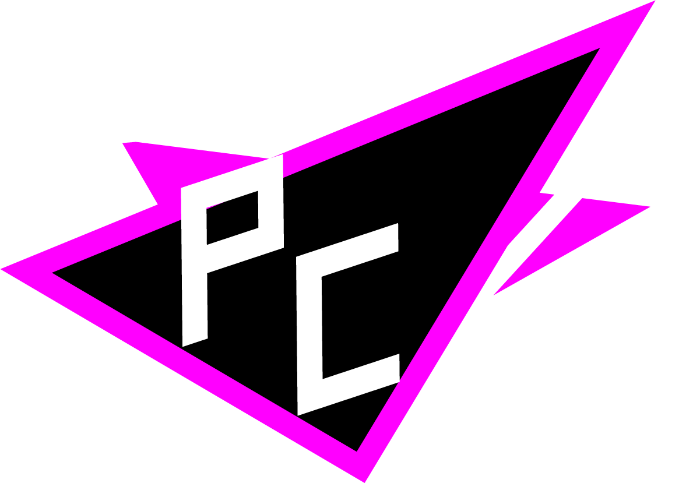
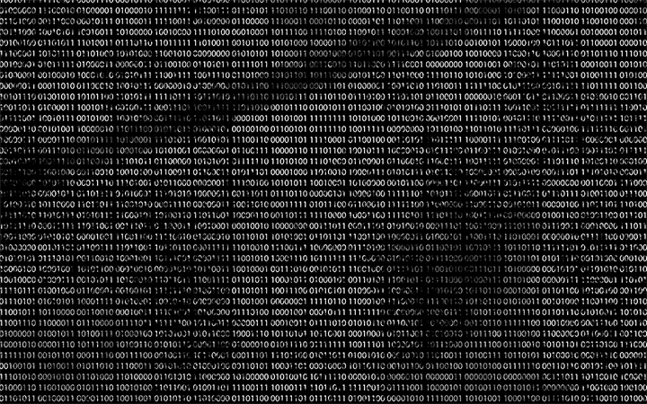
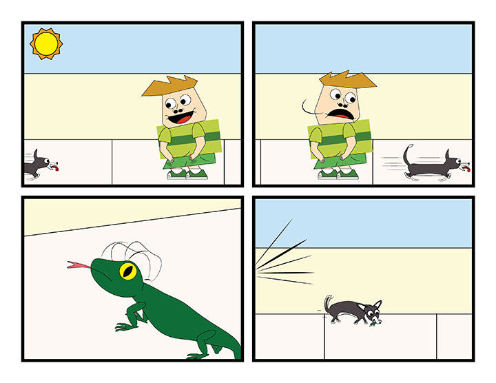

Moon Burst

Peter Chang: Graphic Designer
Portfolio: Digital Art

Eroded Binary
I have a fascination with coding. Couldn't find corrupted looking binary. Made it myself.

Cyber Eye
Packaging project based around cybernetic body parts such as the eye and the brain. WMH either stands for "We Make Humans" or "We Machine Humans".


A progression of manipulation in Adobe Photoshop to create a variety of sun shots.
WereFiona
Hee hee hee hee, I mixed a friend of mine with her dog.
Doggie Comfort
Brochure about the benefits of having your dog sleep in your bed.

Morton
Morton is character I created based off of cartoons like My Gym Partner's a Monkey, Camp Lazlo, Clarence, and lots of other cartoons I could name off. He has an animal companion, Bee, based off of my dog Dolbi who I commonly just call by Bi/Bee. His stories and lifestyle are based off of mine, but turned more "fun", everything is fun, just like in Clarence, but there are also those crazy moments inspired by My Gym Partner's a Monkey. Like, I remember in that one episode where the animal school gets introduced to junk food, and they absolutely love it, so they put it in the cafeteria, and they all get fat and unhealthy, but at the end they blame Lion because he introduced it.